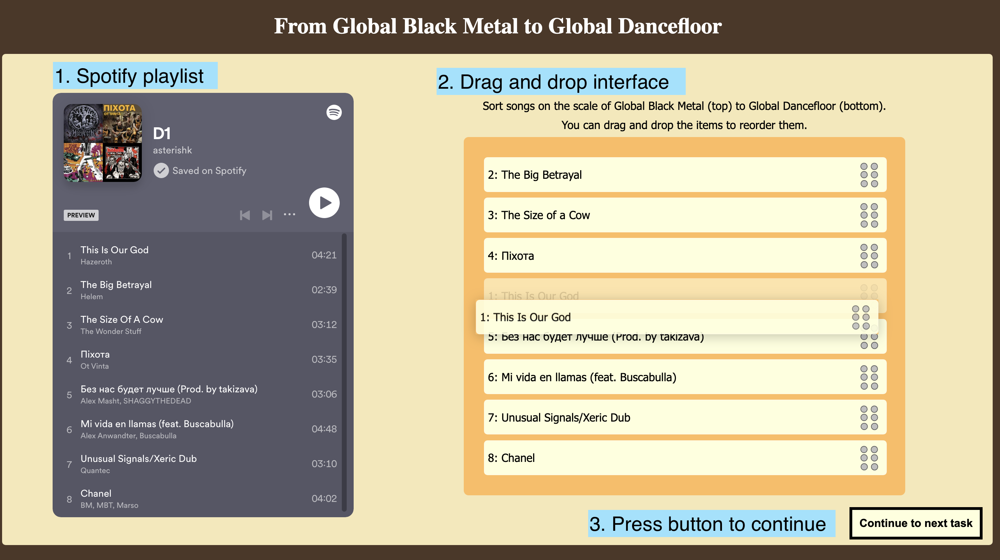

In the following pages, please rank the given songs on a given genre scale. For example: "ranking from Black Metal (top) to Classical Music (bottom)" means songs that sound closer to Black Metal should be closer to the top of the scale, whereas songs that sound more like Classical Music should be at the bottom.
Below is a screenshot of what the interface looks like:
On the left hand side of the page you will see a Spotify Playlist (1).
Please listen to the songs, and rank them using the drag and drop interface on your right (2).
We suggest you jump through bits of the song at different timestamps (eg. in 30 second intervals) to get an overview of what it sounds like.
Click continue when you are done (3).
Each set of songs is expected to take about 5 minutes to sort. It's fine to go by instincts!
